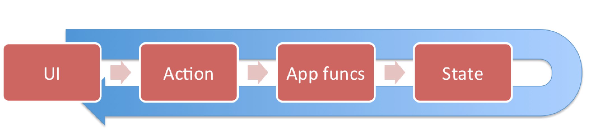

Reactive-Loop
reactive-loop supports you in setting up a reactive loop for your UI:
- The UI dispatches an
Action. This is a literal object which should at least define atypeproperty, such that it is identifiable in the following activities. - The
Actionis handled. This would typically trigger a change of the current state. - Handling the action results in new application state. This state determines completely what is rendered as UI.

React has allowed to model user interaction in this way, replacing classical architectures like MVC or MVVM with an interaction model which embraces concepts from functional programming and eliminates numerous bugs surrounding the syncing of UI with application state.
reactive-loop provides a way to
- Connect React components to reactive-loop app funcs.
- Define handlers for actions
- Have a dispatcher available to dispatch actions or even observables of actions .